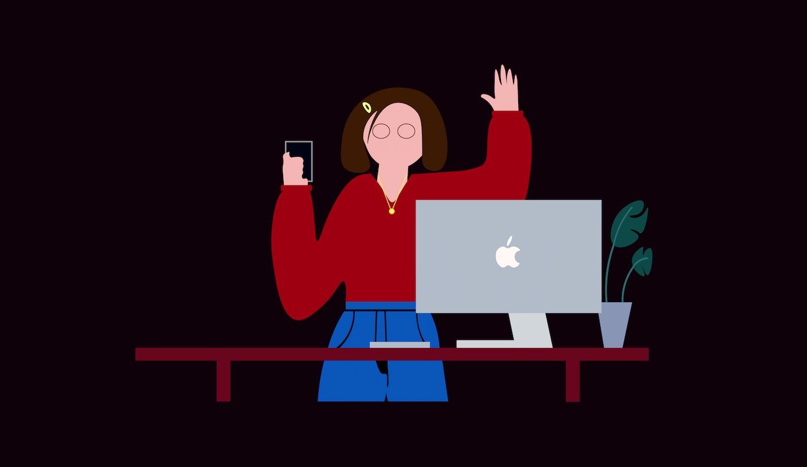
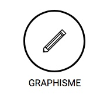
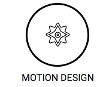
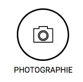

J'adore l'art en général. Cette passion est présente depuis toute petite, grâce à ma famille qui m'a bercée très tôt dans ce domaine. Cette passion pour la peinture, le collage, les musées.. me donne beaucoup de créativité. C'est grâce à ces moments de balade en musée et d'atelier de peinture que j'ai acquis mon imagination.
PORTFOLIO - ROMANE GUILLEMARD
design
Je m’appelle Romane, j’ai 18 ans et je suis en première année à la Normandie Web School, en bachelor chef de projet digital. Depuis petite, je suis passionnée d’art en tous genres : peinture, musique, musée, architecture, cinéma. Je pratique les deux premiers, peinture sur toile et pratique de la guitare. Bref, je suis une fille créative avec une sacrée imagination. Le numérique me permet de les gouverner tous avec un anneau. Mais ne m’appelez pas Sauron! Le numérique, c’est le futur. Le numérique, c’est mon futur. Design-anglicisme. n.m : esthétique industrielle appliquée à la recherche de formes nouvelles et adaptées à leur fonction. Cette définition n’est pas tout à fait la mienne. Beau, utile, esthétique, ergonomique et adapté aux projets. Voici comment je vois le design. Je recherche une alternance dans laquelle j’apporterai mes jeunes qualités graphiques et mon imagination débordante.
MES COMPETENCES



Je suis principalement centrée sur le motion design mais aussi le graphisme (illustrations, logo, affiches, plaquettes, maquettes), c'est d'ailleurs vers ces voies que j'aimerai me spécialiser. Mais étant en première année, mes compétences passent aussi par le marketing (community manager) et un peu de développement (HTML/CSS).
CE QUI ME REND HEUREUSE
La musique, ou le sentiment le plus incroyable qu’il soit. Je suis issue d’une famille de musicien, ce qui m’a vraiment été bénéfique. J’ai commencé la guitare depuis quelques temps, et croyez-moi, ce n’était pas gagné. Il m’a fallu rigueur et attention afin d’y parvenir. Aujourd’hui, ces qualités me rendent service dans la vie de tous les jours.
Ahhh, cher design. Tu es entré dans ma vie il y a peu de temps. Pourtant, c’est avec toi que ma vie se poursuit. J’ai découvert en toi de nombreuses qualités, qui maintenant me sont encrées. D’Illustrator en passant par After Effect, tu as réussi a me faire apprendre tellement de choses. Que j’aimerai à présent dévoiler.
La photographie est une passion que j’ai découvert il y a quelques temps maintenant. Des photos Polaroid vintage aux photo du canon EOS 2000D, ce que j’aime, c’est l’évolution de ce domaine. Il y a quelques mois, j’ai réalisé un cours de photographie avec Laurent Auriaux (un de nos intervenants) ce qui m’avait vraiment plus. J’ai pu acquérir un certain niveau, et beaucoup de précision.